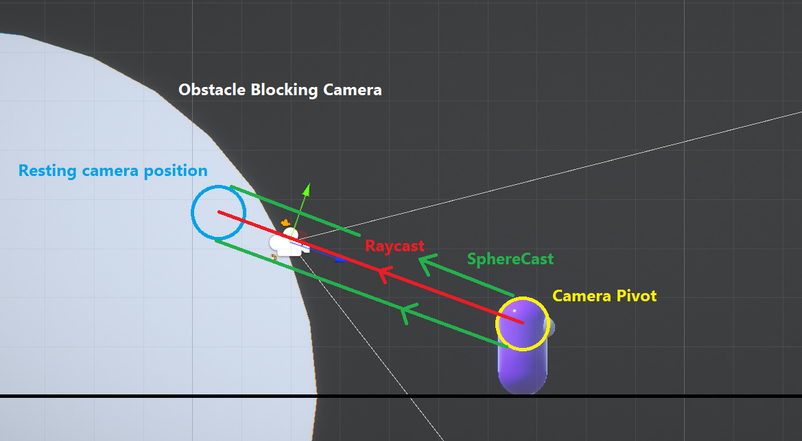
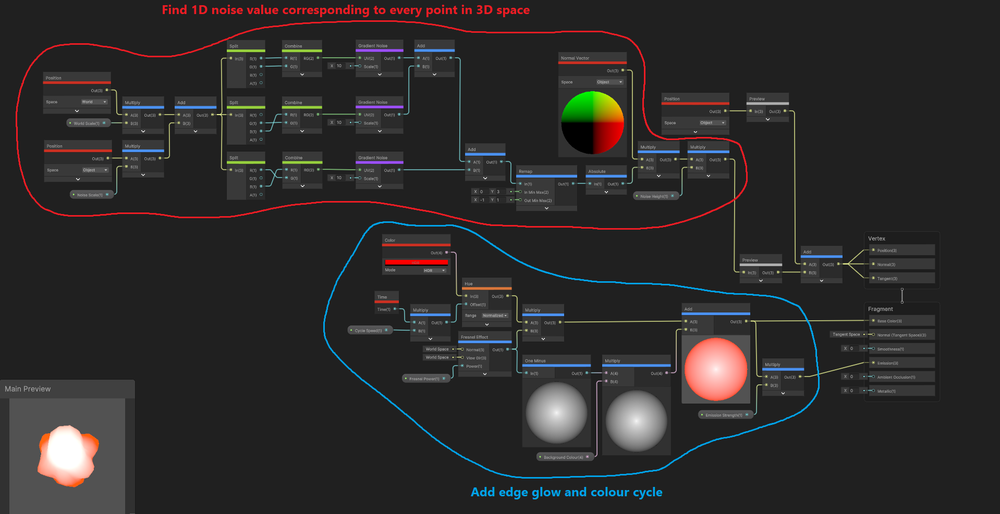
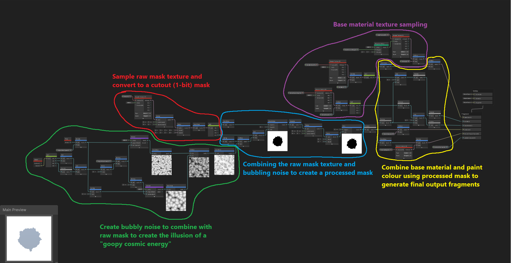

Side Projects
Third-Person Paint Platformer
Project Inspiration
The original inspiration for this little project came from a combination of playing Splatoon & The Unfinished Swan, as well as watching a
fantastic GDC talk given by John Nesky, of thatgamecompany. The presentation
covers the notoriously well-executed third-person camera of Journey, and as a programmer who had never made such a thing before, it was an
appealling challenge.
I wanted to try out the painting mechanic, because it also seemed like an interesting challenge and, honestly, I just wanted
to know how it worked. As someone with no formal education in shaders at that point it seemed like witchcraft, and as much as the textureless art
style of The Unfinished Swan works wonders for that game, I was really curious what it would look like with textures. Could I give the player the power
to paint reality?
Initial Goals
The Process
I started out with the camera, as I do on most of my projects these days. What special features would it need?
Setting the expectations of what I was building well ahead of time was a great tool to help with this process, and something I hope most game designers learn early on. With the knowledge of every state the camera would need to be in at any given time, I was able to map out the transitions between them and logistically solve the design questions ahead of time.
I figured the camera would only need to be in one of two states for my little demo, either aiming or relaxed. For the aiming state I would draw the camera in close over the player's shoulder and for the relaxed state it would return to a neutral position behind the player. However, both of these states would require the camera to avoid obstacles.
While addressing this complication, I learnt about SphereCast and used it to trace the shape of a capsule from my player outwards to the target position of the camera. Any hit along the way would be marked and cause the camera to smoothly draw in closer to the player. As a failsafe, I also perform a raycast in much the same way, so that if line of sight to the player is ever occluded entirely (therefore causing the camera to clip into a wall), I snap the camera forward the minimum distance to ensure this clipping never even happens, as shown.
A diagram showing the collision tests performed by the camera to keep it outside of the map geometry.
Anyway enough about the camera. For the painting part of the project I first needed a projectile to cause the impact. I was really inspired by the look of the coloured paints in Portal 2 and wanted to give that sort of appearance a try for myself, but I wasn't prepared to sit down and try to write an implicit surface renderer to simulate that look so I found my own way with a relatively simple shader, that I ended up being really happy with. The shader gives a nice effect when moving, by displacing the noise along each axis proportionally to its movement on that axis, causing it to appear to interact with the air as it arcs towards its target.
The shader graph material I made for the paintballs.
The movement effects of the paintball material.
The painting mechanic itself ended up being much more of a learning curve than I had expected, and I first cloned the project repository from the Splatoon video by Mix and Jam and then began reading through and adapting it to suit my needs and figure out how it worked. In doing so I learnt about Graphics.Blit(), UV Channels, Material Instancing, Masking Textures and more. So while I can't claim the basic implementation to be my own, I did end up modifying almost everything else about it including the shader used by the paintball when it contacts a surface.
So let's dive into that. At its core, the painting system works by creating an instance of every material on every separate object each with it's own grayscale mask texture that gets written to with Blit() during gameplay. This represents where the paint is on the object, thanks to the power of UVs. So when a paintball contacts a surface it calls a function passing in it's current position to lookup this texture coordinate and write to its mask, therefore painting the surface.
Here's the shader graph for the Paintable material. It's pretty big.
References Used
That's all for this one. It was fun to try out so many new areas of programming at once and I learnt a lot from it.
Cheers!
Cellular Automata Labyrinth
This area is under construction, hold tight!
Procedural Maze Generator I made a while back after first discovering cellular automata. All algorithms by me. #proceduralgeneration #madewithunity #indiedev pic.twitter.com/XSdXWhUnEw
— Prometheus (@Prometheus625) March 19, 2022
Procedural Road Generator
This area is under construction, hold tight!
Drifting around the procedural void-space in my newest side project, Void Odyssey. #madewithunity #proceduralgeneration #drifting #indiedev pic.twitter.com/fZTwb0FhCs
— Prometheus (@Prometheus625) March 19, 2022
Thank you for reading!
Feel free to check out any of my other side projects above, or simply return to the home page.